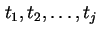
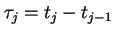
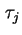
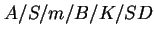
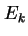
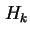
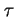
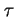
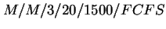

ในการบริการห้องปฏิบัติการคอมพิวเตอร์ นักศึกษาทั้งมหาวิทยาลัยที่มีสิทธิในการใช้ห้องคอมพิวเตอร์เป็นผู้ใช้งาน หรือ ``งาน'' (Jobs) ในระบบ
ในรูป 3.1 แสดงภาพความสัมพันธ์ของการใช้งานห้องปฏิบัติการคอมพิวเตอร์ ที่มีจำนวนเครื่องบริการ (Facility) จำนวนหนึ่ง ที่นักศึกษาสามารถใช้งานได้ ถ้าเครื่องคอมพิวเตอร์ถูกใช้งานทุกเครื่อง นักศึกษาที่เข้ามาใช้งานต้องรออยู่ในคิว ในคำจำกัดความของทฤษฎีคิว นักศึกษามักถูกเรียกว่า ``Customer'' หรือผู้ใช้งานระบบ
เพื่อจะสามารถวิเคาระห์ระบบได้ เราจำเป็นต้องกำหนดคุณลักษณะของระบบดังต่อไปนี้
ถ้านักศึกษาเข้ามาใช้ห้องปฏิบัติการ ณ. เวลา , ตัวแปรสุ่ม  เรียกว่า ``เวลาระหว่างการเข้าใช้งาน'' (Interarrival Time) โดยทั่วไป การวิเคราะห์ของทฤษฎีการเข้าคิวจะสมมุติว่า  เป็นลำดับของตัวแปรสุ่มที่ไม่ขึ้นอยู่ด้วยกัน ที่มีการกระจายเหมือนกัน (Independent and Identically Distributed (IID))
กระบวนการเข้าใช้งาน (Arrival Process) ที่ใช้มากที่สุดเรียกว่า การเข้าใช้งานแบบพัวซอง (Poisson arrivals) ที่เป็น IID และมีการกระจายแบบ exponential
การกระจายแบบอื่นเช่น Erlang และ Hyperexponential มีการใช้บ้าง
ปริมาณที่สำคัญอีกประการหนึ่งคือ เวลาที่นักศึกษาเข้าใช้งานคอมพิวเตอร์ในห้องปฏิบัติการ ช่วงเวลาดังกล่าวเรียกว่าเวลาบริการ (Service Time)
โดยทั่วไปเวลาบริการจะสมมุติให้เป็นตัวแปรสุ่ม ที่เป็น IID และมักใช้การกระจายแบบ Exponential การกระจายแบบอื่นเช่น Erlang และ Hyperexponential มีการใช้บ้าง
ในห้องปฏิบัติการคอมพิวเตอร์ อาจมีจำนวนเครื่องคอมพิวเตอร์ที่ให้บริการมากกว่าหนึ่งเครื่อง ซึ่งทุกเครื่องถือเป็นส่วนประกอบของระบบคิว เครื่องคอมพิวเตอร์ในคิวเดียวกันจะเป็นเครื่องที่เหมือนกัน และเครื่องคอมพิวเตอร์จะถูกใช้โดยนักศึกษาใดๆ ก็ได้ ถ้าเครื่องไม่เหมือนกันจำเป็นต้องแบ่งออกเป็นคิวต่างหาก และพิจารณาเครื่องที่เหมือนกันเป็นคิวเดียวกัน
จำนวนที่มากที่สุดของนักศึกษาที่สามารถเข้ามาอยู่ในห้องปฏิบัติการคอมพิวเตอร์ในพื้นที่ทั้งหมด คือ ``ขนาดของระบบ'' ทั้งนี้รวมถึงนักศึกษาที่กำลังใช้คอมพิวเตอร์อยู่ และนักศึกษาที่รอการใช้งานอยู่ โดยทั่วระบบจะมีขนาดที่จำกัด อย่างไรก็ตามถ้าระบบมีขนาดใหญ่ประมาณค่าหนึ่ง เรามักจะสมมุติว่ามีขนาดเป็นอนันต์ เพื่อให้สามารถคำนวณได้ง่ายขึ้น
ขนาดของระบบรวม-งานที่กำลังรับบริการ และ งานที่รอรับบริการอยู่
ขนาดประชากรของตัวอย่างห้องปฏิบัติการคอมพิวเตอร์ คือ จำนวนนักศึกษาที่มีสิทธิในการใช้งานห้องปฏิบัติคอมพิวเตอร์ดังกล่าว ในทางเป็นจริงจำนวนของประชากรมีขนาดจำกัด แต่ถ้ามีประชากรจำนวนมาก เรามักจะสมมุติให้มีขนาดของประชากรเป็นอนันต์ เพื่อให้สามารถคำนวณได้ง่าย
การเลือกลำดับของนักศึกษาในการเข้ารับบริการในห้องปฏิบัติการเรียกว่า ``รูปแบบการบริการ''
รูปแบบการบริการที่มีการใช้งานอย่างแพร่หลายมากที่สุดเป็นแบบ ``มาก่อนรับบริการก่อน'' หรือ First Come First Served (FCFS) ตัวอย่างรูปแบบบริการอื่นได้แก่
ในการระบบชนิดของคิว เรามักจะใช้สัญกรณ์ของ Kendall ในรูปของ  โดยแต่ละตัวอักษรแสดงถึงพารามิเตอร์ที่ได้กล่าวมา โดยที่
การกระจายของกระบวนการเข้าใช้ระบบ และเวลาบริการมักจะแสดงโดยตัวอักษรดังต่อไปนี้
| Exponential | |
|  | Erlang with parameter |
|  | Hyperexponential with parameter |
| Deterministic | |
| General |
สังเกตว่าการกระจายแบบ Exponential แสดงโดยตัวอักษรย่อ  ที่ย่อมาจาก Memoryless หรือไม่มีความจำ ถ้าระยะเวลาระหว่างการเข้าใช้ระบบ  มีการกระจายแบบ Exponential ด้วยค่าเฉลี่ย
ที่ย่อมาจาก Memoryless หรือไม่มีความจำ ถ้าระยะเวลาระหว่างการเข้าใช้ระบบ  มีการกระจายแบบ Exponential ด้วยค่าเฉลี่ย  ค่าคาดหวัง (ค่าเฉลี่ย) ของการเข้าใช้ระบบครั้งต่อไปจะเป็น
ค่าคาดหวัง (ค่าเฉลี่ย) ของการเข้าใช้ระบบครั้งต่อไปจะเป็น  เสมอ ไม่ขึ้นอยู่กับเวลาการเข้าใช้ระบบในครั้งก่อนหน้า คุณสมบัติดังกล่าวเรียกว่า Memoryless ข้อมูลการเข้าใช้ระบบในอดีตไม่สามารถช่วยในการคาดหวังการเข้าใช้ระบบในอนาคตได้
เสมอ ไม่ขึ้นอยู่กับเวลาการเข้าใช้ระบบในครั้งก่อนหน้า คุณสมบัติดังกล่าวเรียกว่า Memoryless ข้อมูลการเข้าใช้ระบบในอดีตไม่สามารถช่วยในการคาดหวังการเข้าใช้ระบบในอนาคตได้
ตัวอย่าง:  แสดงถึงระบบคิวที่มีพารามิเตอร์ดังต่อไปนี้
เมื่อจำนวนงานที่อยู่ในระบบมีจำนวนเท่ากับ 20 งาน งานที่เข้ามาใหม่จะไม่ได้รับบริการเนื่องจากบัฟเฟอร์เต็ม เรียกว่างานหายไป